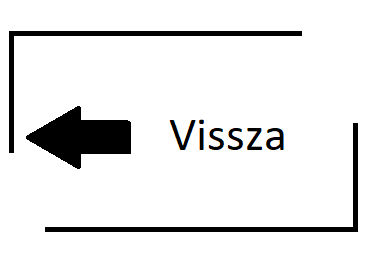
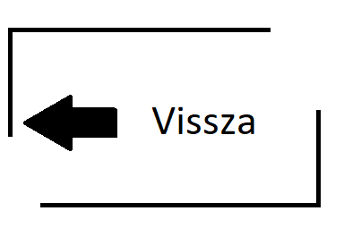
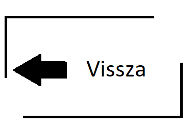

Régen úgy gondolták, de talán még ma is sokan hiszik, hogy a testek mozgásban
tartásához mindig szükséges valamilyen külső erőhatás, nehogy a test lelassuljon.
A tapasztalat diktálja mindezt, hiszen a kocsit húzó lónak "erőlködnie" kell, illetve
bármilyen teher emelése vagy akár csak tartása közben mi magunk is fölfelé
nyomjuk
vagy húzzuk a testet. A középkor két nagy fizikusa, Galilei olasz és Newton angol
tudós
munkássága nyomán alakult ki az a rend a fizikában, amely a mindennapok mechanikai
jelenségeit összhangba hozza az elmélettel, megadja a jelenségek magyarázatát.
Newton I. törvénye a következőket mondja ki:
minden test megtartja nyugalmi
állapotát, vagy megmarad az egyenes vonalú egyenletes mozgás
állapotában míg
más test mozgásállapotának megváltoztatására nem készteti.
|

|